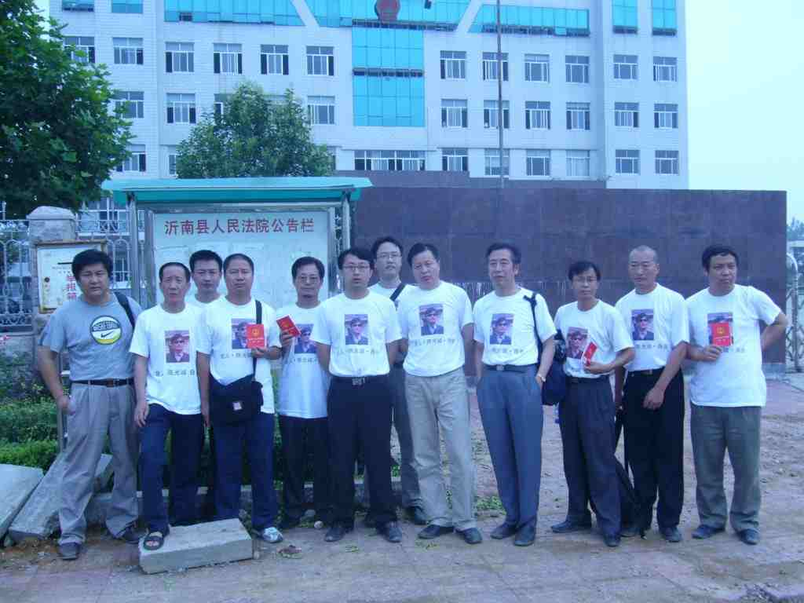

编者按：中国维权律师高智晟多年来为弱势群体发声，并因此被迫害，绑架，在狱中遭受酷刑虐待。2006年他被吊销律师执照，继而被以“煽动颠覆国家政权罪”判囚，直到2014年获释，但精神、肉体受到严重摧残。2017年8月他再次被失踪。在高智晟消失两周年之际，好友滕彪撰文寄语。
1.
2004年12月30日，我在互联网上读到一封关于法轮功问题致全国人大的公开信。当时对法轮功的大规模迫害已五年之久，但国人对此问题噤若寒蝉，好像从来没有发生过一样。一个律师为此公开呼吁，必定冒着极大的风险，需要非凡的勇气。我因此记住了这个律师的名字：高智晟。
当时维权运动刚刚起步，活跃的维权律师全国加起来不到二十人，我急切地想要认识高律师。不过当时那封公开信的风险难以评估，他随时可能被捕入狱。好在没过几个星期，我们就见了面。他身材魁梧，红光满面，目光炯炯有神，讲起话来亲切、幽默，常常在交谈中发出响亮的大笑。他待人和善，对专制暴行和种种社会不公却嫉恶如仇。他会模仿刘宝瑞讲“珍珠翡翠白玉汤”（传统相声中的单口名段），惟妙惟肖。有段时间他学电视剧中的人物，管我叫“彪、彪、彪哥”，逗得大家乐不可支。我和他相见恨晚，而且很快就有开始了各类维权案件的合作。
先是蔡卓华案。这是我第一在法庭上见识高智晟律师的风采。蔡卓华是北京一个家庭教会的牧师，这家教会紧挨着中共中央党校。因为印刷大量圣经，蔡卓华和他的妻子萧云飞、妻的哥哥嫂嫂共四人以“非法经营罪”被捕。我们组织了八个人的辩护团，除了我和高智晟律师外，还有范亚峰、张星水、金晓光律师，另外三人许志永、陈永苗、王怡因为手续问题被拒绝参与辩护。因为法庭无理拒绝蔡卓华的妈妈旁听，高智晟对法官大加斥责。之后的辩护过程，也充分展现了高律师的专业技能和辩护技巧。整个庭审不像是检察院对被告人的控诉，更像是辩护团对法官、检察官和司法不公的控诉。這也是我第一次近距离接触家庭教会，此后我和他经常在北京几家家庭教会参加主日活动，他后来受洗成了基督徒。
在陕西靖边看守所的照片，左一为高智晟。© Private
之后我们一起介入当时极受国际社会关注的陕北石油案。当时此案的代理律师之一朱久虎被抓，关在陕西榆林靖边看守所，我和高智晟、李和平、许志永前去交涉 ，出来后在看守所门口照相后离开。没走多远，十多名持枪武警气势汹汹地跑过来，质问我们为什么拍照片。他们估计这阵势能把我们吓唬住，但我们四人都是久经沙场的老战士了，毫无畏惧地和他们据理力争，弄得他们灰头土脸。事后老高跟我们感慨：“对付四个西装革履的律师尚用如此手段，可以想见当地人民哪里会有什么安全感？”
后来我和高智晟顺路去他在佳县的老家。我永远也忘不了住在他家窑洞、蹲在院子里吃油泼面的感觉，忘不了他的沉默寡言的哥哥，忘不了窑洞周围那干旱、贫瘠的黄土地。高智晟就是从这样贫穷困顿、看不到希望的中国农村走出来，他的维权、抗争，也蕴含着对这片土地的深厚感情。这体现在他的很多文字、尤其是他悼念母亲的《我的平民母亲》一文中。
2.
高智晟的人生路艰辛坎坷。11岁时，父亲去世，16岁时考取重点高中，却因家贫而中断学业。在31岁成为律师之前，他上山采药、离家打工、下煤窑挖煤、当兵、卖菜、在水泥厂当工人，受尽人间疾苦，深刻感受到中国社会的不公不义。成为一名律师后，他为自己立下规矩：三分之一案件，都为穷人弱势免费打官司。他说：“我的出身很穷，我知道穷人的感情，所以我知道我要做什么。……我不会把帮助别人看成是对别人的施舍。我的目光很长远，我要用我的这一辈子拯救我的下一辈子！”他经历坎坷、阅人无数、正直勇猛，又有了“法律武器”，仗义疏财、打抱不平，常被称为中国的“良心律师”。高智晟成为中国维权运动的先行者和最有标志性的人物，似乎是冥冥中的必然。
2005年10月到12月，他三次给胡锦涛、温家宝写公开信，揭露当局对法轮功学员的系统性酷刑，这让我们更加担忧他的安全。这场巨大的人权灾难，人们选择不看，不说，不问。但高智晟冒着巨大风险到各地去调查采访法轮功学员，为他们维权。
他的律师事务所首先遭到北京司法局的整肃，然后从2005年10月开始，他的人身自由就被无理限制，北京市安全局、北京市公安局的二十名左右的便衣、开始寸步不离地跟踪他，每天十多辆车在他家周围进行监视。对这些在寒冷的冬日里监视他的便衣，他在文章中写道：“每当早上起床后透过窗户，看到他们一个个不停地在原地蹦跳以驱离寒冷的场面，我和夫人的心理都感到很难受，今天早晨我和夫人还商量着如何解决这群年轻人白天的热水饮用问题。”他果真给这些人送去开水，而且绝非为了羞辱，而是出于对这些年轻人的关心。这些便衣的反应是立刻背过脸去。他多次跟我说，这些专制的执行人，同样也是专制的受害者啊。

2005年太石村事件，我们组成了“太石村法律顾问团”，除了高智晟和我之外，还有唐荆陵、李和平、许志永、张祖桦、王怡、浦志强等人。陈光诚被软禁和抓捕之后，高智晟多次为其大声疾呼，2006年7月19日，更穿着“光诚衫”，与20多名维权者从北京驱车前往山东临沂，抗议法院对陈光诚的不公正审判。抗议者的T恤衫都被撕烂，相机被抢劫，多数人受到官方雇佣的歹徒的暴力袭击。高律师后来公开退党、发起绝食抗暴、直接挑战强大的专制体制，被捕入狱已经无法避免。
高智晟被国安人员秘密绑架之前，我和他经常见面，介绍他认识刘晓波、张祖桦、孔杰荣等人。2006年5月2日，我和家人和他一家人到北京郊区一起旅游，被六辆车和大量国保跟踪，高智晟戏称那是“一级安全护卫”。
那时候人权律师主要集中在北京，联络频繁，我们都希望高智晟能稍微“收敛”、“低调”一些，但他不听；他或者已经知道，那个时候收敛也没用了，伸头是一刀，缩头也是一刀，索性痛痛快快，奋力拼搏一场。
高智晟当之无愧是中国最勇敢的律师，没有“之一”。凭着他对制度的透彻判断和对人性的悲悯情怀，他赢得了广泛的尊敬；除了众多人权奖项之外，他也多次被提名成为诺贝尔和平奖的候选人。
3.
2006年8月，不可避免地，高智晟被绑架失踪了。事后，他在那传诵颇广的《黑夜、黑头套、黑帮绑架》写道：
“行至一拐角处时，迎面扑来六、七名陌生人。我的背后脖胫处被猛然一击，眼前感到整个地面飞速向我砸来，但我并未昏迷。接下来，感到有人纠起我的头发，迅速套上了黑头套，被架上了一辆车。我被压迫趴在中间，右侧脸着地，感到有一只大皮鞋猛然踩压在我的脸上。”
他在文章大量描述的酷刑细节不忍卒读：
四支电警棍开始电击我，我感到所击之处，五脏六腑、浑身肌肉像自顾躲避似的在皮下急速跳躲。我痛苦的满地打滚，当王姓头目开始电击我的生殖器时，我向他求饶过。我的求饶换来的是一片大笑和更加疯狂的折磨。……不知何时，有人在我头上、脸上撒了尿。三支电警棍开始电击我，我毫无尊严地满地打滚。十几分钟后，我浑身痉挛抖动得无法停下来。接着，我被架着跪在地上，他们用牙签捅我的生殖器。我至今无法用语言述清当时无助的痛苦与绝望。
4.
从2006年8月至今的十三年里，高智晟要么处在被失踪的状态，要么被关在监狱，要么就是被严密软禁在家，未曾有过一天的人身自由。关押期间所受的酷刑比前一次更为残酷。那么阳光、健壮的高律师，再次出现在人们面前时，已变得瘦弱、苍老，牙掉了好几颗，记忆力大减……我看着那张照片，欲哭无泪。
但经历了一次又一次的绑架和失踪，一次又一次的监禁和酷刑，高智晟没有屈服。只要有机会，他就拿起笔，记录他的遭遇，记录他人的不幸，并控诉这个政权的荒谬和野蛮。回过头来看，可以说，高智晟的文字是用他自己的血写成的。
2016年4月，他在被软禁的陕北窑洞里，得知我的书被美国律师协会拒绝出版的事情后，特意写了《ABA和滕彪哪个应该更强大》， 对ABA（美国律师协会）进行严厉批评，也谴责任何向中共专制政权谄媚、绥靖、投降、乃至助纣为虐的力量。可以看出，历经九死一生的高律师，批判的锋芒竟丝毫没有减弱。
2017年8月高智晟再次被强迫失踪，至今杳无音信，已经整整两年。关心他的朋友们心急如焚，他的家人更是哭干了泪水。但高律师如同被人间蒸发了一样，活不见人，死不见尸。
我们一直在追寻高律师，希望寻回他那慈悲的微笑、非凡的勇气，寻回他那捍卫人类自由尊严的、不曾屈服的灵魂。
2019年8月2日，写于台北再遭关押